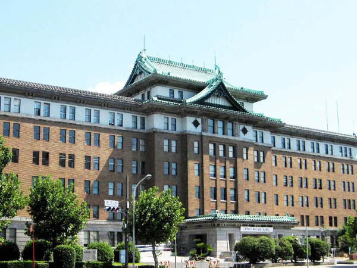

愛知県へようこそ！
日本の中心で歴史、文化、産業が融合した魅力あふれる県です。
愛知県について
愛知県は日本の中部地方に位置し、名古屋市を県庁所在地とする県です。工業と商業の中心地であり、多くの歴史的名所や美しい自然環境を有しています。愛知県はまた、文化と伝統が豊かで、年間を通じて多くの祭りやイベントが開催されます。
歴史
あいちの地名の由来
「あいち」の地名は、万葉集巻三の高市黒人の歌「桜田へ鶴鳴き渡る年魚市潟（あゆちがた）潮干にけらし鶴鳴き渡る」に読まれている「年魚市潟（あゆちがた）」の「あゆち」が「あいち」に転じたといわれています。
県庁舎の歴史
明治5年に誕生した愛知県県庁舎は、名古屋城内に置かれました。その後名古屋市内を転々とし、昭和10年に現在の本庁舎の建設が着工され、昭和13年に完成しました。異なるタイル張りによる三層構成で、三方の中央に名古屋城の大天守を思わせる破風付きの入母屋造屋根を載せています。西洋的な様式と城郭天守の意匠を融合させて地域色を表し、昭和前期の建築思潮で「日本趣味」の表現を達成しており、歴史的価値を有している。そのため、重要文化財に指定されています。
愛知県は戦国時代において重要な役割を果たしました。特に、織田信長や豊臣秀吉、徳川家康といった有名な戦国武将の出身地として知られています。名古屋城などの歴史的建造物も多数存在します。江戸時代には、徳川家の支配下に置かれ、経済的にも発展しました。
観光地
- 名古屋城 - 美しい庭園とともに歴史を感じることができます。
- 熱田神宮 - 古くから信仰を集める神社。三種の神器の1つが祀られています。
- トヨタ産業技術記念館 - トヨタの歴史と技術を学べます。
- 犬山城 - 日本の国宝に指定されている城。
- 岡崎城 - 徳川家康の生誕地。
名物料理
愛知県は多くの美味しい名物料理があります。以下はその一部です。
- 味噌カツ - 特製の味噌だれがかかった豚カツ。
- ひつまぶし - うなぎの蒲焼きを細かく刻み、ご飯とともにいただく料理。
- 手羽先 - 名古屋風の手羽先は甘辛いタレで味付けされています。
- 天むす - 天ぷらを具材としたおむすび。
アクセス
愛知県へのアクセスは非常に便利です。中部国際空港（セントレア）があり、名古屋市内には新幹線の停車駅もあります。東京から名古屋までは新幹線で約1時間半、大阪からは約1時間でアクセス可能です。また、愛知県内には多くの公共交通機関が整備されており、移動もスムーズです。